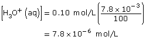
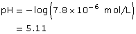
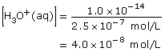
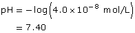
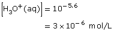

Module 8—Acid-Base Equilibrium
 Explore
Explore
 Read
Read
In Module 7 you used information about the extent of reaction to understand equilibrium position. Another way to understand equilibrium position is to observe the properties of a system. When considering acids, you learned that strong acids react (ionize) 100% with water, whereas weak acids react (ionize) less than 100% with water. Which properties of an acidic solution would be affected by the differences in the extent of reaction (ionization)?
Read “Acid Strength as an Equilibrium Position” on pages 718–720 of the textbook. Work through “Communication example 5” and “Communication example 6” on page 720 to learn how percent ionization is used in the calculation of pH and how a pH value can be used to determine a percent ionization for an acid.
 Self-Check
Self-Check
Complete “Section 16.1” questions 1, 2, 4, 6, and 7 on page 721 of the textbook.
Self-Check Answers
Contact your teacher if your answers vary significantly from the answers provided here.
Section 16.1 1.
- If a solution is neutral, then
[H3O+(aq)] = [OH–(aq)]
- If a solution is acidic, then
[H3O+(aq)] > [OH–(aq)]
- If a solution is basic, then
[H3O+(aq)] < [OH–(aq)]
Section 16.1 2.
Conductivity: This test would detect the degree of ionization. Strong acids will ionize to a greater extent than weak acids and, therefore, would produce solutions with a higher conductivity.
pH: Since strong acids ionize to a greater extent than weak acids, solutions of equimolar solute concentrations of strong acids will have lower pHs.
Section 16.1 4.
- HCN(aq) + H2O(l) H3O+(aq) + CN–(aq)


Section 16.1 6.


Section 16.1 7.

© 2008 Jupiterimages Corporation
 Discuss
Discuss
In the previous Read section you learned that the distinction between a strong and a weak acid is the extent to which the acid ionizes. How does this definition fit with your understanding of an equilibrium system?
Hydrochloric acid is a strong acid, whereas hydrofluoric acid is a weak acid. Use a balanced chemical equation to describe the equilibrium position of these two different types of acids.
Post a copy of your response to the discussion area for your class. Save a copy of your response in your course folder and submit a copy to your teacher.